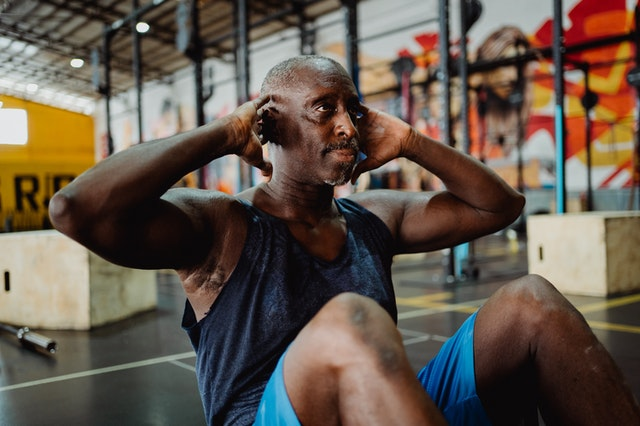

Reducing Risk of Chronic Disease
Physical Activity to Prevent Chronic Disease
Regular physical activity helps improve your overall health, fitness, and quality of life. It also helps reduce your risk of chronic conditions like type 2 diabetes, heart disease, many types of cancer, depression and anxiety, and dementia. Regular exercise can help insulin more effectively lower your blood sugar level. Physical activity can also help you control your weight and boost your energy.
Here are some of the examples of exercises that can help you reduce risk of chronic disease:
- Cardio or Aerobic - brisk walking, dancing, yard work, jogging, biking, swimming.
- Muscle strengthening - free weights, crunches, elastic bands, squats, hill walking, cycling, push-ups, sit-ups, etc.

